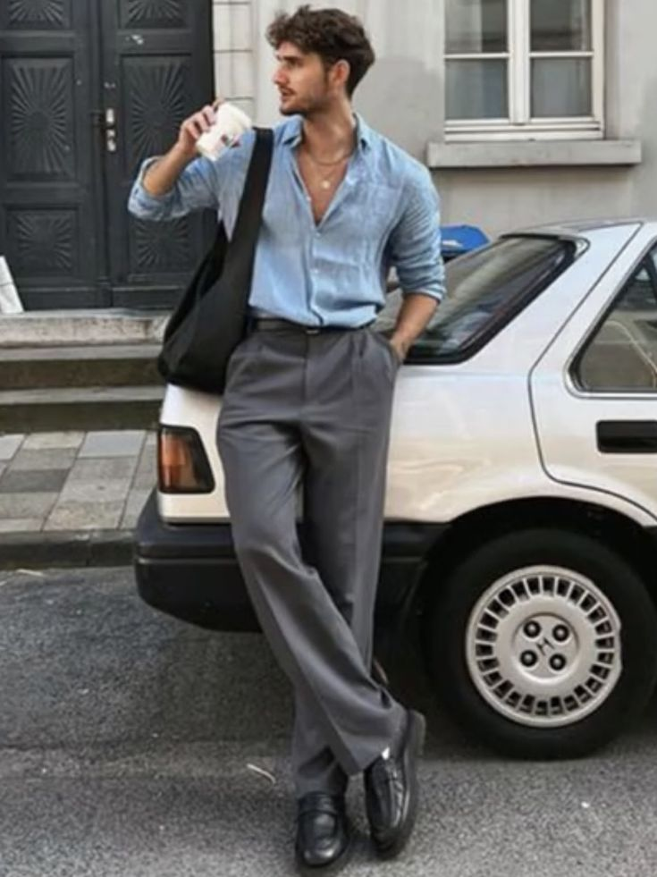
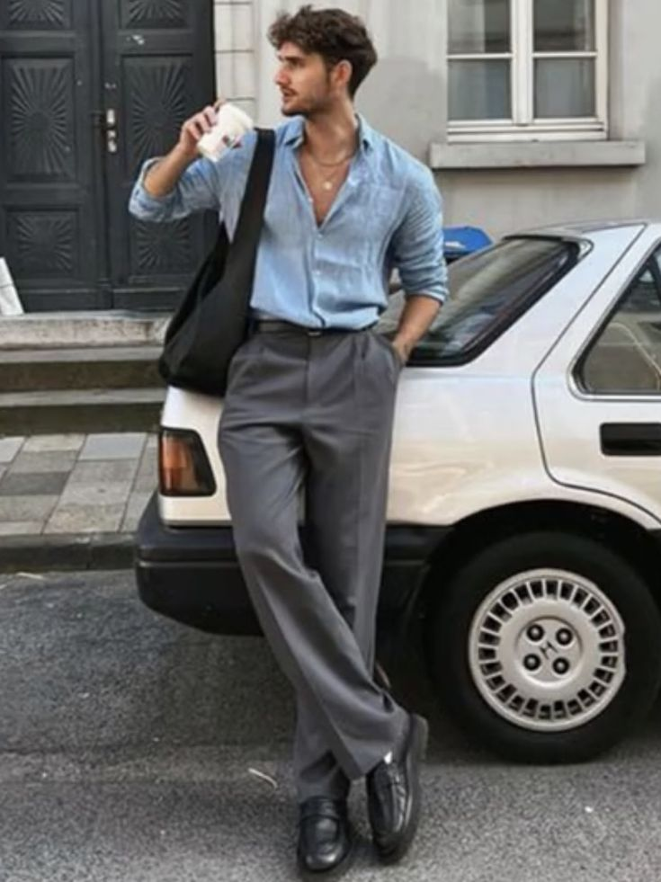

Наші статті
Весняні тренди 2025
Цієї весни модний світ зосереджується на природних відтінках, легких тканинах і мінімалізмі. У центрі уваги – зручний і стильний одяг, що поєднує класику та сучасність.
У тренді пастельні кольори, особливо пудровий рожевий, м'ятний та лавандовий. Вільні силуети з акцентом на талію залишаються актуальними. Також популярні елементи мережива, легкі тканини та мінімалістичний дизайн.
.jpg)
.jpg)
Як поєднувати аксесуари?
Аксесуари є важливим елементом стильного образу. Вони допомагають зробити будь-який лук більш виразним і додати йому індивідуальності.
Основне правило — поєднувати відтінки та стилі. Наприклад, класичний одяг чудово виглядає з мінімалістичними прикрасами, а повсякденний стиль можна доповнити яскравими деталями, такими як великі сережки або масивні браслети.

Найпопулярніші стилі цього сезону
Цього року на вулицях міст можна побачити безліч стилістичних експериментів. Основний тренд — поєднання класичних речей з кежуал та спортивними елементами.
Зокрема, популярні костюми oversize, мінімалістичний монохром, а також спортивні костюми з елегантним взуттям.
 

Стрітстайл: що носитимуть у 2025 році?
У стрітстайлі головну роль відіграють комфорт та унікальність. Оверсайз, багатошаровість, нестандартні поєднання кольорів і текстур – це головні акценти нового сезону.
Варто звернути увагу на поєднання спортивних та класичних елементів: наприклад, худі з класичними брюками або строгий піджак із кросівками. Також в тренді натуральні тканини та екологічні матеріали.